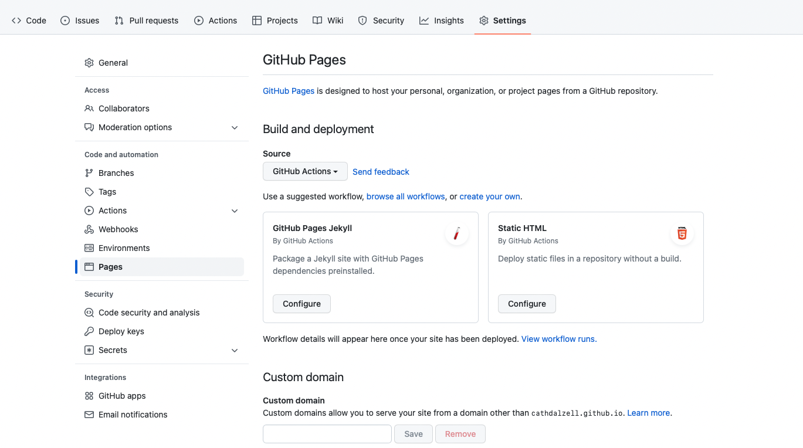
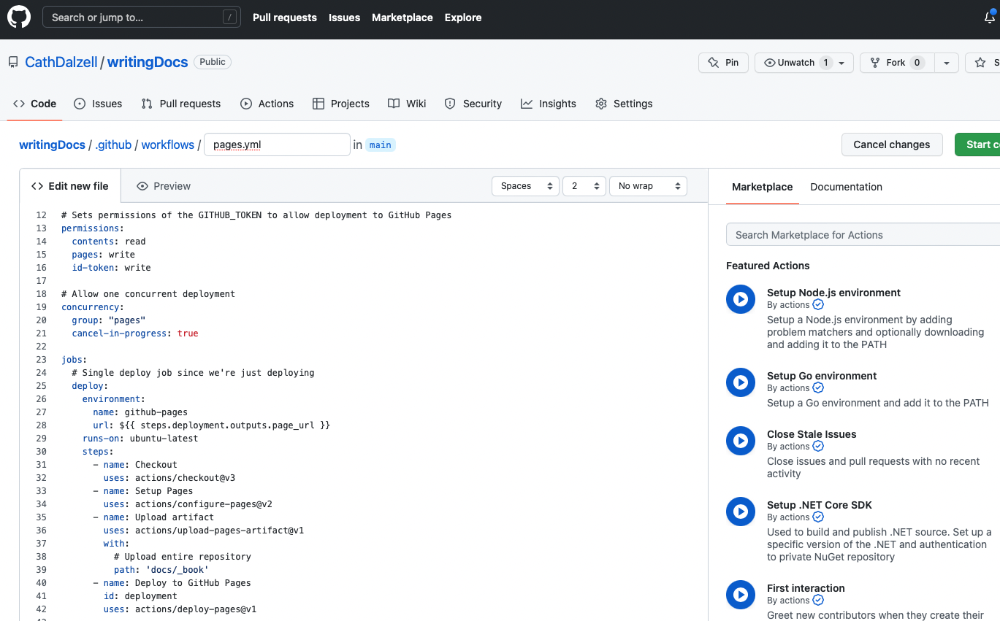
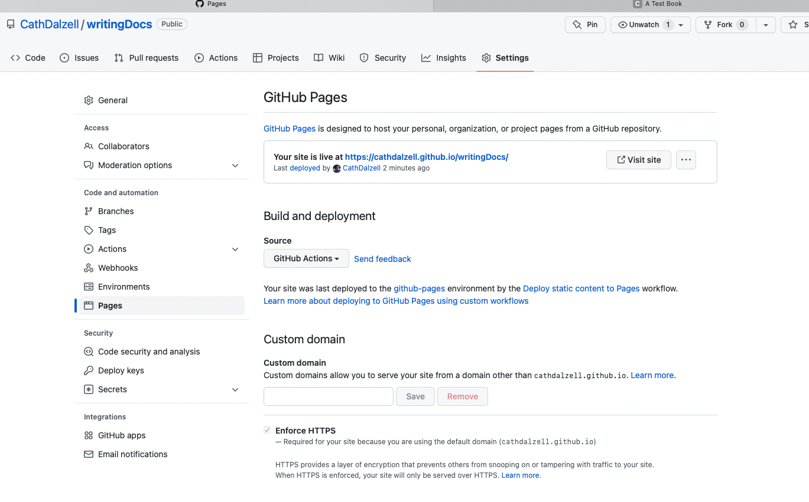

2 Using bookdown
R package bookdown allows organizing and compiling several Rmarkdown (or simple markdown files) into a book like website complete with table of contents and chapter links. The author, Yihui Xie, illustrates the results in bookdown formatted documentation. Bookdown has a lot of options, but I’m just going to focus on the basics required to host a multipage document on github as supplementary documentation for a repo.
2.1 Pre-requisites
You have to be able to install R and RStudio. Know enough about R to install a package and know enough about RStudio to know how to create an RMarkdown document.
2.2 The Instructions
- Install R and RStudio
- In the console of RStudio, enter
install.packages("bookdown")to install the package. - Create your repo, say
myRepoand create and R Project based on that repo. - Create a folder in
myRepocalleddocs, say. Your book will live indocs. - Create and Rmd file called
index.Rmdindocs.
An RMarkdown document begins with some yaml lines. The default that comes with RStudio looks like this:
title: "My Title"
author: "Catherine Dalzell"
date: "2022-09-06"
output: html_documentThis yaml instructs knitr to render the document in the usual way. We need to change this if we want to get bookdown output. Here is a simple example:
title: "A Test Book"
author: "Catherine Dalzell"
date: "2022-09-06"
site: bookdown::bookdown_site
output: bookdown::gitbook
documentclass: book
link-citations: yes
github-repo: CathDalzell/writingDocs
description: "A simple Bookdown demo"There are other options, but this will get the job done. Note that this yaml is specific to hosting in github format on Github. I have supplied the name of my repo – writingDocs in this case and indicated that I want the output to be bookdown::gitbook.
2.2.1 Document structure
Major headings in markdown are noted with a single hash #. In bookdown, a major heading signifies the start of a new chapter. double hashes indicate subsectionsm, which also get links in the table of contents. Triple hashes do not show up in the TOC, but they display in the body of the document as minor headings.
It is possible to build a bookdown book from a collection of Rmd files, but the simplest way to get a book is to write everything in one long Rmd file, using major headings to define the chapters.
2.2.2 knit and publish
- click the
Knitbutton in RStudio to render the book. It should display in RStudio’s default browser. - When you like what you see, push the entire project to Github.
- Check your repo. The files that contain your book will be there, but they will not display as a static web site.
- Open the
settingsoff your repo and click onpages. It’s on the left hand side of the page.

10. Under source, select GitHub Actions followed by Static HTML.
11. You will be taken to a configuration document.

12. The only thing you need to change is the path entry. The default is .. Change this to the folder that contains your bookdown output. In my case, this is docs/_book.
13. Press the big green button to commit your change and pull it back down to your local repo.
14. Wait a moment and then check under settings -> pages again. You should see something like this:

15. GitHub informs you that your site is live at [book_url].
16. To make your book easy to find, copy the url and link to it from your Readme.